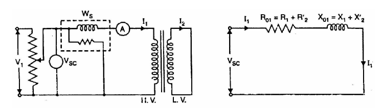

This test is conducted to determine Ro1 (or Ro2), Xo1 (or Xo2) and full-load copper losses of the transformer.
In this test, the secondary (usually low-voltage winding) is short-circuited by a thick conductor and variable low voltage is applied to the primary as shown in the figure.
The low input voltage is gradually raised till at voltage Vsc, full-load current I1 flows in the primary. Then I2 in the secondary also has full-load value since I1/I2 = N2/N1.
Under such conditions, the copper loss in the windings is the same as that on full load. There is no output from the transformer under short-circuit conditions.
Therefore, input power is all loss and this loss is almost entirely copper loss. It is because iron loss in the core is negligibly small since the voltage Vsc is very small.
Hence, the wattmeter will practically register the full-load copper losses in the transformer windings.
|  |
Equivalent circuit of transformer on short circuit. |